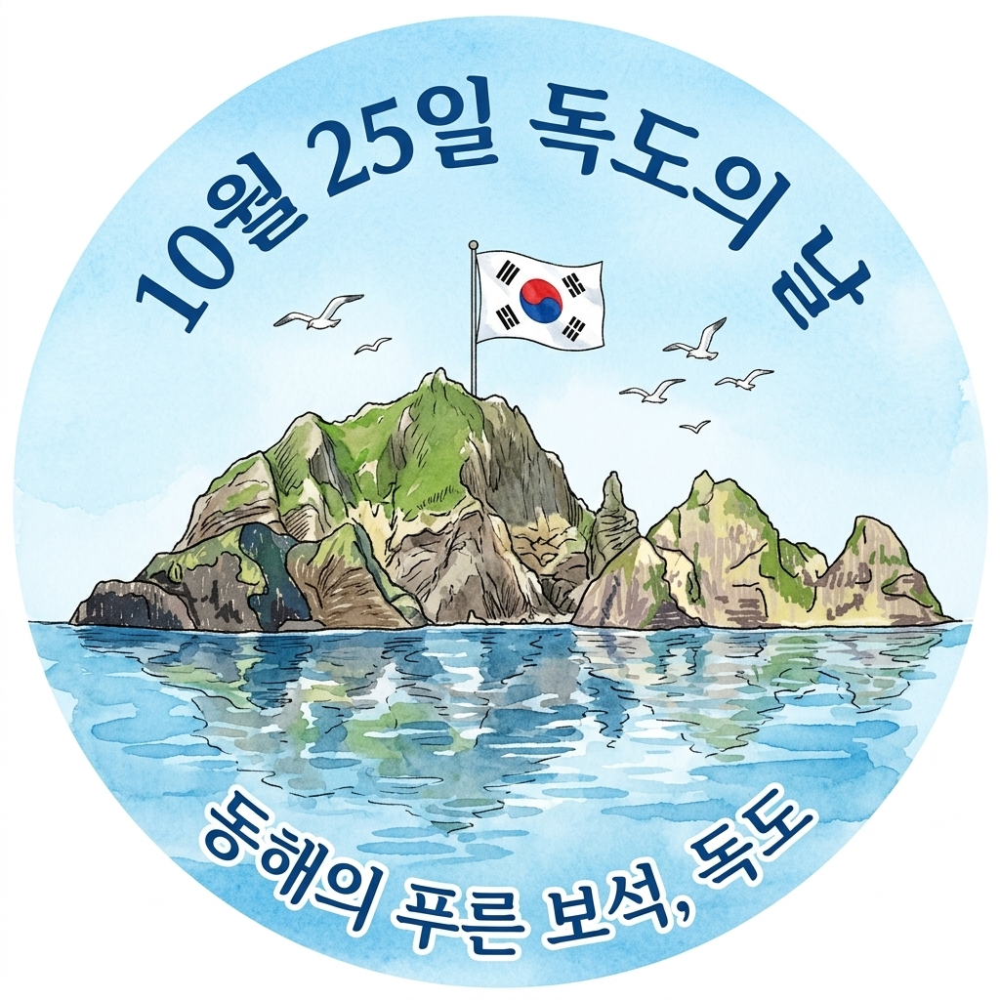
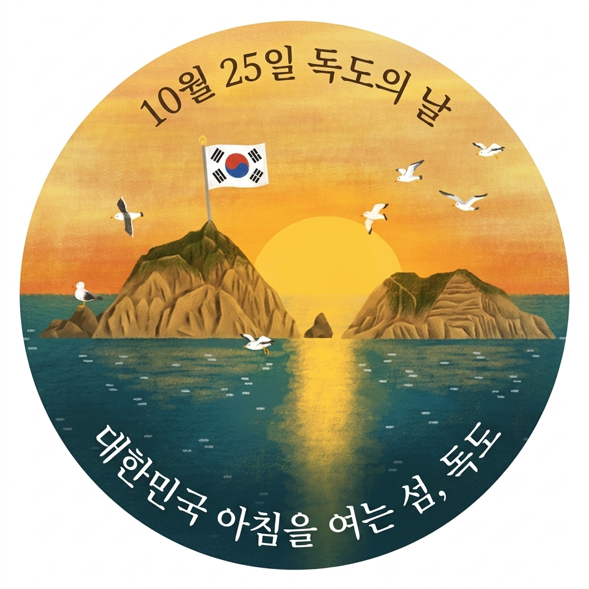
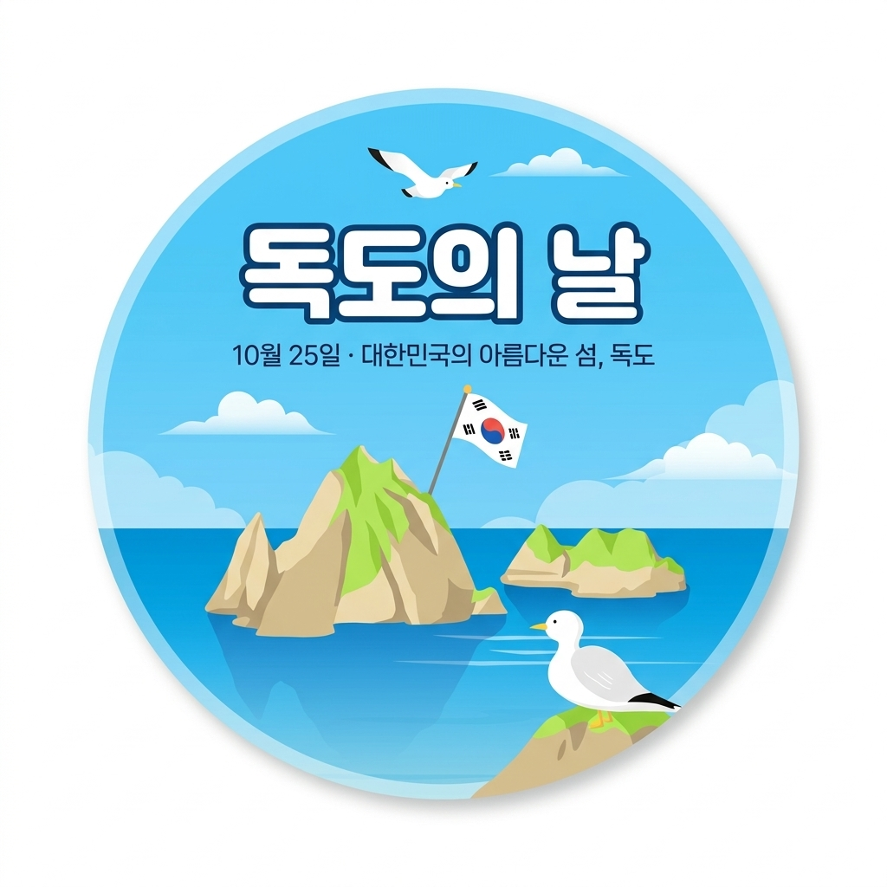
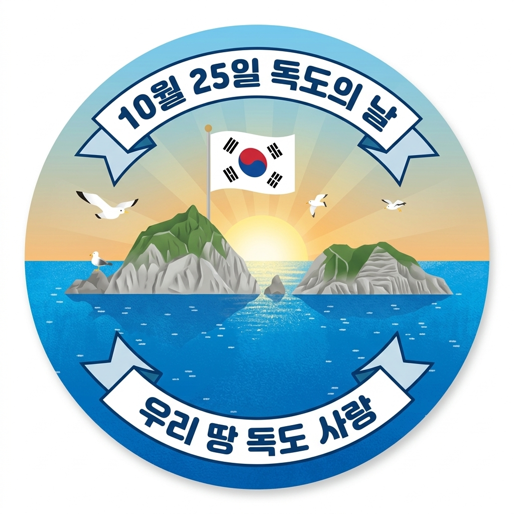
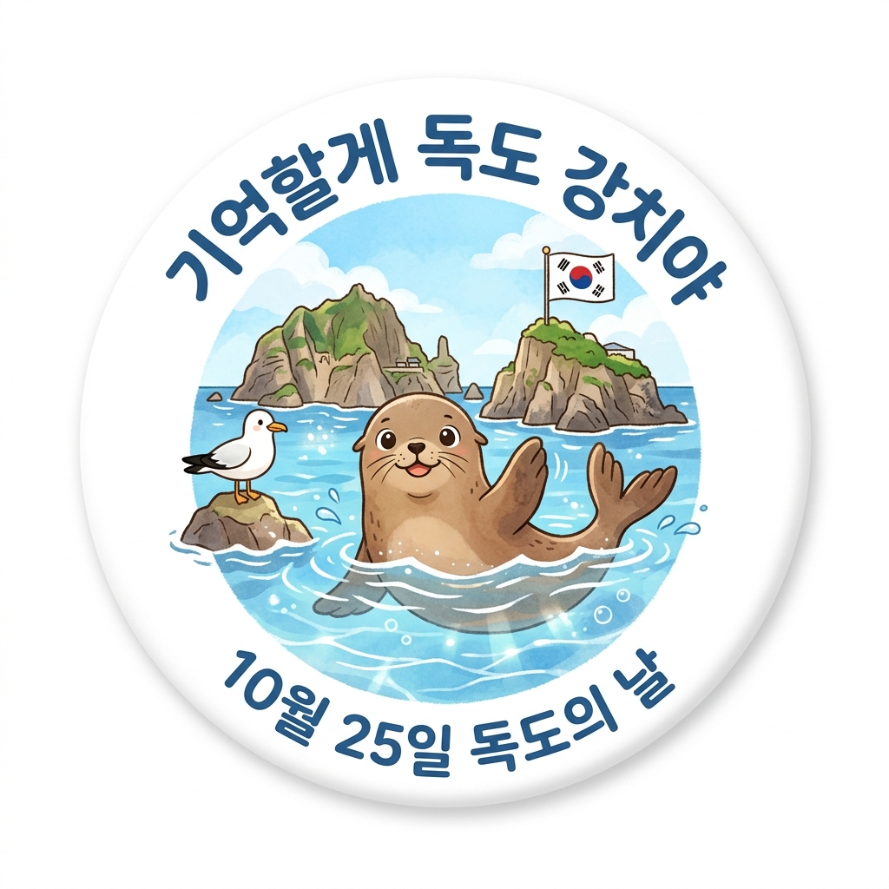
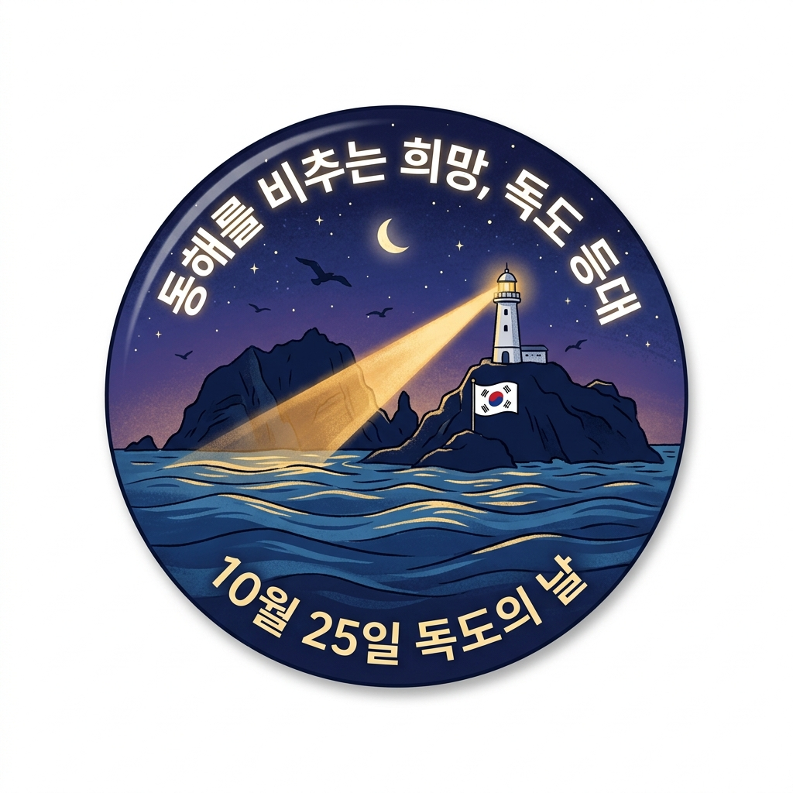
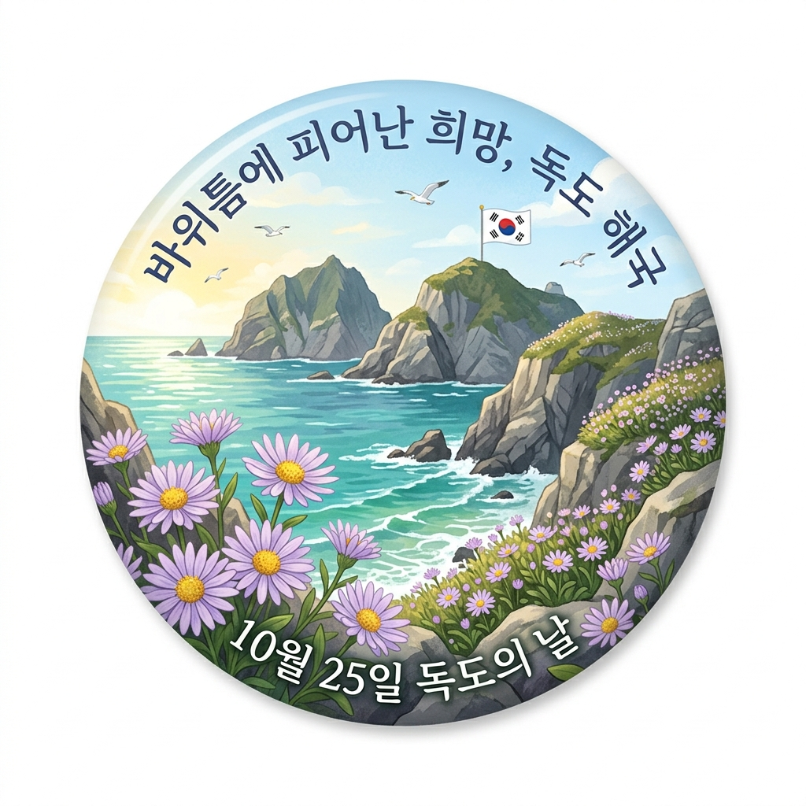

독도의 자연, 역사, 생태(강치, 해국, 등대, 독립문바위)를 조사하여 직접 그린 순수 2D 원형 도안 8종입니다.
외곽 빨간 점선(지름 70mm)을 따라 오려내면 58mm 버튼 프레스 기계로 완벽하게 제작됩니다. (A4 총 2페이지 구성)
※ 인쇄 설정: [배율: 100% (실제 크기)] / 외곽 빨간 점선(70mm)을 따라 오려내어 제작하세요.

1. 수채화 & 물그림자 ("동해의 푸른 보석, 독도")
2. 황금빛 일출 & 바다 ("대한민국 아침을 여는 섬, 독도")
3. 청량한 하늘 & 입체 타이포 ("독도의 날")
4. 리본 엠블럼 ("우리 땅 독도 사랑")※ 독도 생태(강치, 해국), 랜드마크(등대, 독립문바위), 대한제국 칙령 제41호 테마 도안입니다.

5. 독도의 상징 강치 ("기억할게 독도 강치야")
6. 희망의 빛 독도 등대 ("동해를 비추는 희망, 독도 등대")
7. 바위틈 야생화 ("바위틈에 피어난 희망, 독도 해국")